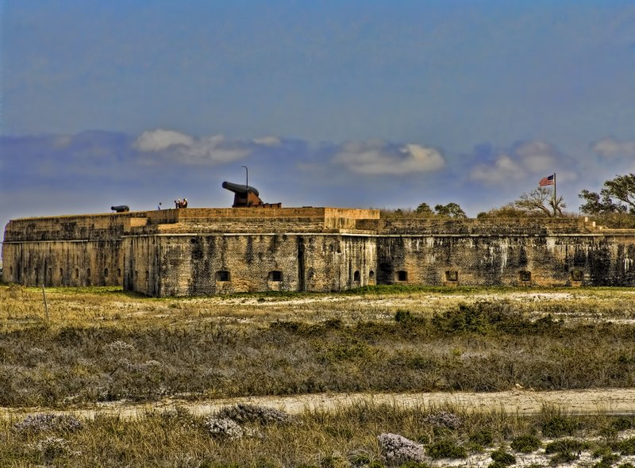
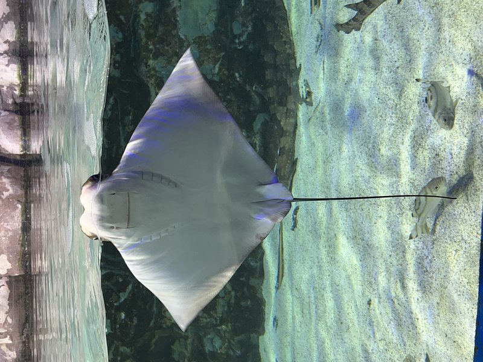
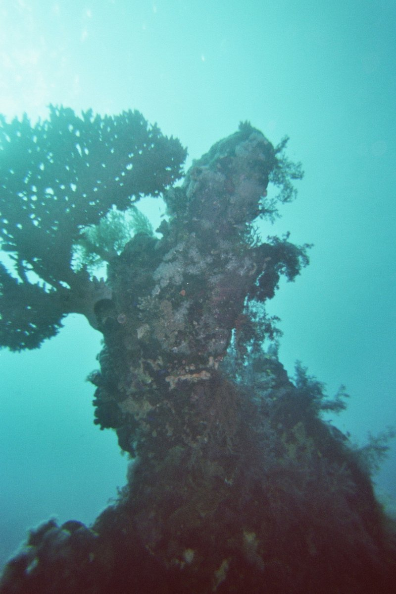
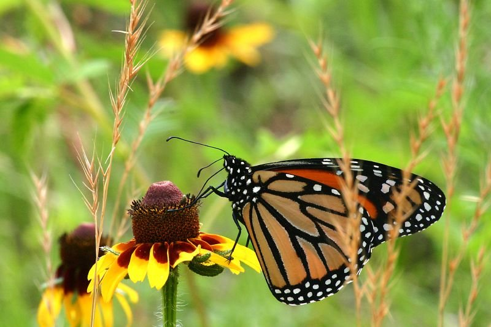

TRIP OVERVIEW
Day 1 – Fort Jefferson · Glass Bottom Boat · Mallory Square Sunset
Day 2 – Bahia Honda State Park · Swimming with Dolphins · Duval Street
Day 3 – John Pennekamp Coral Reef · Butterfly Conservatory · Key West Shipwreck Museum
Day 1
🏨 From Hotel: 🚕 15 min → Key West Historic Seaport
1. Fort Jefferson
↳ A 19th-century brick fortress 70 miles west of Key West, accessible by ferry. The hexagonal fortification sits in Dry Tortugas National Park and was used as a military prison holding Dr. Samuel Mudd. Visitors snorkel among coral reefs and walk the ramparts for unobstructed Gulf views.
🏛️ Daily 8:00am - 5:00pm
⏰ ~6h

🚕 10 min
2. Glass Bottom Boat Tour
↳ A boat with a transparent glass floor revealing brain coral, sea fans, grouper, and parrotfish below the hull. Tours depart from Key West marina for two to three hours over the living reef, giving dry access to one of the most intact coral ecosystems in North American waters.
🏛️ Daily 3:00pm - 6:00pm
⏰ ~2h

🚕 10 min
3. Mallory Square Sunset
↳ The nightly sunset gathering at Mallory Square Plaza — street musicians, acrobats, and crowds converging to watch the sun drop into the Gulf of Mexico. Vendors line the square and visitors applaud at the moment the sun touches the horizon. A longstanding Key West tradition at the western tip of Duval Street.

🚕 15 min → hotel
Day 2
🏨 From Hotel: 🚕 50 min → Bahia Honda State Park
1. Bahia Honda State Park
↳ The largest undeveloped beach in the Keys, with white sand and shallow water. The park spans the island and includes the old Bahia Honda Rail Bridge from the Flagler Railroad. The beach is ideal for swimming and snorkeling just offshore, and is notably more spacious than Key West beaches.
🏛️ Daily 8:00am - 6:00pm
⏰ ~2h

🚕 1h
2. Swimming with Dolphins
↳ An interactive encounter with Atlantic bottlenose dolphins at the Dolphins Plus facility in Islamorada. Visitors enter the water alongside the dolphins in a structured program that follows strict welfare guidelines. The facility is a research and education center, not a theme park performance.
🏛️ Daily 9:00am - 4:00pm
⏰ ~1h 30 min

🚕 50 min
3. Duval Street Historic District
↳ A mile-long street lined with historic buildings from Key West's era of shipwrecking and cigar manufacturing. Duval runs from the Gulf to the Atlantic and is the spine of the old city — Conch-style colonial homes, galleries, and the most concentrated strip of 19th-century commercial architecture in South Florida.

🚕 15 min → hotel
Day 3
🏨 From Hotel: 🚕 45 min → John Pennekamp Coral Reef State Park
1. John Pennekamp Coral Reef State Park
↳ The first underwater coral reef state park in the United States, protecting 178 square nautical miles of reef off Key Largo. Snorkel tours visit brain coral, elkhorn formations, sea turtles, and the Christ of the Abyss bronze sculpture installed at 25 feet depth in 1965.
🏛️ Daily 8:00am - 5:00pm
⏰ ~3h

🚕 30 min
2. Key West Butterfly Conservatory
↳ An enclosed garden housing over 2,000 live butterflies from around the world — blue morpho from South America, swallowtails, monarchs, and species with wingspans up to 6 inches. Visitors walk through enclosed pathways as butterflies land on flowers, clothing, and skin in close proximity.
🏛️ Daily 9:00am - 5:00pm
⏰ ~45 min

🚕 10 min
3. Key West Shipwreck Museum
↳ Housed in a replica of a 19th-century wrecker's warehouse, the museum documents Key West's history as a wrecking capital through salvaged artifacts: cannons, anchors, gold coins, and a lighthouse lens. A climbing tower offers views over Key West harbor and the reef where hundreds of ships wrecked.
🏛️ Daily 9:40am - 5:00pm
⏰ ~1h

🚕 15 min → hotel
🗓️ Weekly Closures
No notable city-wide weekly closures in Key West.
📅 Tours
Viator
↳ Full-day excursion to Fort Jefferson including ferry transit, snorkeling the surrounding reef, and island exploration.
🕐 8:00am · ⏳ 8h · 👥 group
🚕 15 min
↳ Half-day boat snorkel tour to John Pennekamp State Park visiting live coral formations, tropical fish, and the Christ of the Abyss underwater sculpture off Key Largo.
🕐 9:00am · ⏳ 3h · 👥 group
🚕 45 min
GetYourGuide
↳ Two-hour evening sail aboard a catamaran with drinks and snacks, watching the sunset from the water off Mallory Square.
🕐 6:00pm · ⏳ 2h · 👥 small group
🚕 12 min
↳ Two-hour reef tour aboard a glass-bottom vessel for views of brain coral, sea fans, and tropical fish without snorkeling.
🕐 3:00pm · ⏳ 2h · 👥 group
🚕 10 min
TripAdvisor
↳ Narrated 90-minute open-air train tour covering Key West's historic neighborhoods, landmarks, and architectural heritage.
🕐 9:00am · ⏳ 1h 30 min · 👥 group
🚕 12 min
↳ Three-hour snorkeling expedition to the living reef off Key West with gear provided, certified instructors, and marine naturalist commentary throughout.
🕐 10:00am · ⏳ 3h · 👥 group
🚕 15 min
☕ Cappuccino
The Coffee Plantation · 4.5⭐ · 180+ reviews
Sippin' Cafe · 4.4⭐ · 120+ reviews
Flamingo Crossings · 4.2⭐ · 80+ reviews
🫕 Restaurants Near Hotel
Santiago's Bodega · 4.6⭐ · 1200+ reviews
↳ Spanish tapas and wine bar; one of the most-reviewed spots in Key West.
🏛️ Daily 5:00pm - 10:00pm
🚕 12 min
Café Marquesa · 4.7⭐ · 650+ reviews
↳ Contemporary American in the historic district; well-sourced ingredients.
🏛️ Daily 6:00pm - 10:00pm
🚕 10 min
The Waterfront Brewery · 4.4⭐ · 900+ reviews
↳ Craft beer and bar food; open-air deck with views of the Historic Seaport.
🏛️ Daily 11:00am - 11:00pm
🚕 14 min
🍽️ Downtown Restaurants
Louie's Backyard · 4.5⭐ · 1100+ reviews
↳ French-influenced Caribbean cuisine on an oceanfront terrace in Key West.
🏛️ Daily 11:30am - 10:00pm
Pepe's Café · 4.3⭐ · 1400+ reviews
↳ Oldest restaurant in Key West — Cuban and Conch-influenced breakfast and dinner.
🏛️ Daily 7:30am - 10:00pm
Grand Café Key West · 4.4⭐ · 780+ reviews
↳ Contemporary American in a Victorian landmark on Duval Street; known for brunch.
🏛️ Daily 8:00am - 10:00pm
🍮 Local Tastes
Conch Salad
↳ Raw conch marinated in lime juice, onion, and hot pepper; a Keys staple served at beachside stands and fine restaurants alike.
Mahi-Mahi
↳ The most common local catch; grilled or blackened, served with rice and lime; appears on nearly every Key West menu.
Key Lime Pie
↳ Condensed milk, egg yolks, and key lime juice in a graham cracker crust; served without meringue in Key West, only whipped cream.
Grouper Sandwich
↳ Fried or blackened grouper on a roll with tartar sauce; a lunchtime fixture at the Historic Seaport and casual waterfront spots.
Yellowtail Snapper
↳ A delicate local fish, often grilled whole with butter and lemon; sweeter than mahi-mahi and widely available fresh-caught.
🎭 Shows, Performances & Concerts
No exceptional shows, performances, or concerts in Key West.
🚆 Train Stations Near Hotel
No train stations in Key West.
⛲️ Day Trips by Train
No day trips from Key West.
🏓 Pickleball
Higgs Beach Courts · Outdoor
↳ 10 free outdoor courts at the beach; group play starts daily at 8:30am
🏛️ Daily 6:00am - 11:00pm
🚕 9 min
⭐ Michelin Restaurants
No Michelin-starred restaurants in Key West.